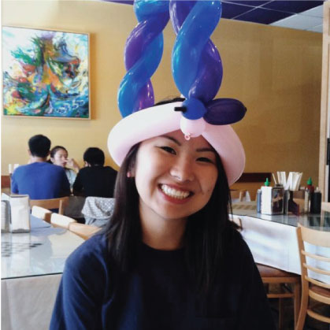

About Me
I am a UX designer with a programming background (or a programmer with a design background—I still haven't figured that one out...). I'm currently working towards getting my Bachelor's degree in Computer Science at UC Berkeley, but in between the endless CS projects and weekly problem sets, I dedicate the rest of my time to being an officer of Innovative Design, a design service club at Cal. During my time at Innovative Design, I've taught a class of Berkeley students the fundamentals of Photoshop & Illustrator, led a few teams of graphic designers, and, most importantly, learned that design doesn't have to just be my hobby; it can be my career, too!